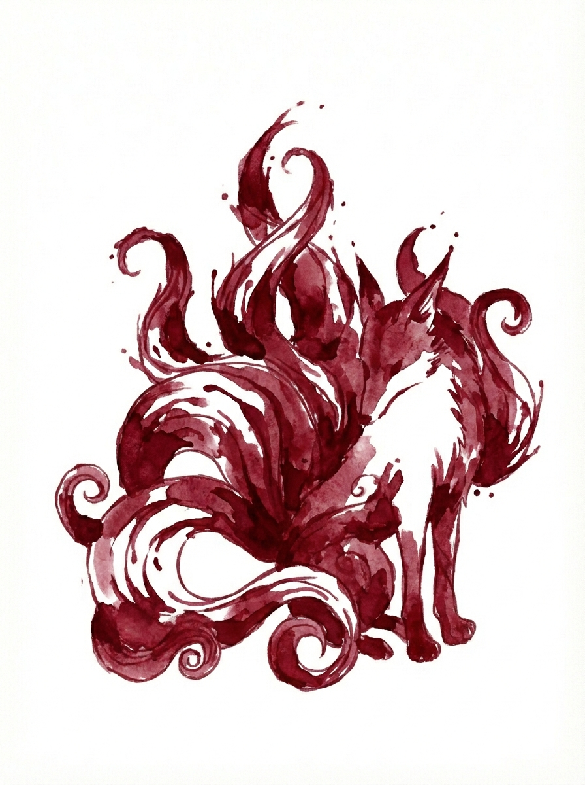

Hi. We're RedFox.
Two brothers who write music, make games, and build the software we wish already existed. Most of it runs on Linux. A lot of it is for musicians. All of it is free and open source.
See what we've made ↓
Things we've made
2 games · 1 playable now
Games
Air combat in a Great War that went a little differently, and a battle where one player commands from above while everyone else fights in the ranks.
See the games
4 projects · Mostly for Linux
Software
The tools we wished already existed, a lot of them for musicians. All free and open source.
See the softwareAbout us
RedFox Labs is Matt and Dewy. We write music and make games, and when we need a tool that doesn't exist yet, we build it. We make these things for ourselves first, then share them in case they help you too.
More is on the way: more software, more games, and eventually the music too.